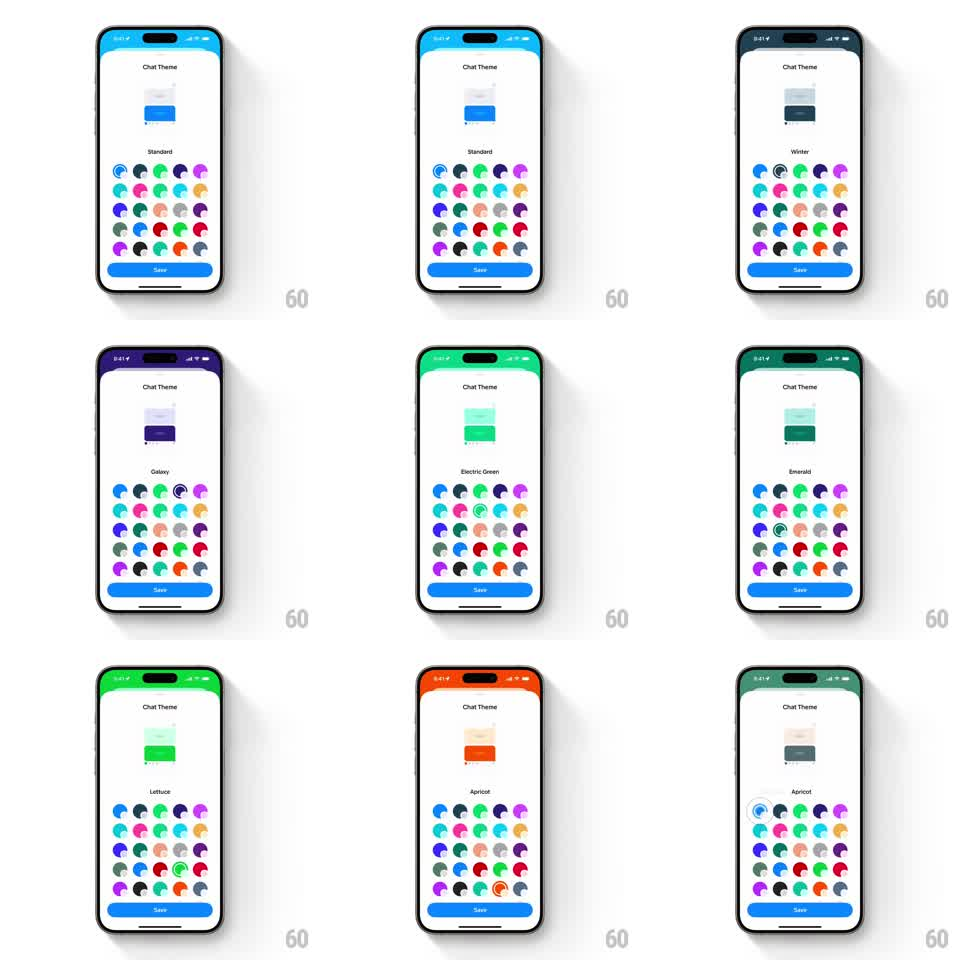

Media
Frame-by-frame

Rebuild this interaction 1:1: Honk's chat theme picker - tapping a swatch in the color grid morphs the preview chat card to the theme's colors, retints the screen's top edge, and casts a matching ambient glow, with the theme name updating below the preview.

Rebuild this interaction 1:1: Honk's chat theme picker - tapping a swatch in the color grid morphs the preview chat card to the theme's colors, retints the screen's top edge, and casts a matching ambient glow, with the theme name updating below the preview.
## Integration
Integration: stack-agnostic spec - springs given as stiffness/damping, timed motions as duration + curve; map every value to your framework and animation library of choice.
## Scene
"Chat Theme" screen: a chat preview card centered (mini conversation mockup), theme name beneath it ("Standard", "Winter", "Galaxy", "Electric Green", "Emerald", "Lettuce", "Apricot"), a 5-column grid of circular split-color swatches, and a blue "Save" button at the bottom. The status-bar area at the very top takes the selected theme's color.
## Motion spec
Pattern: theme morph with ambient glow.
- Tap a swatch: a selection ring draws around it (stroke trim, 200ms) and the swatch pops (scale 1 -> 1.12 -> 1, spring ~340/16).
- The preview card crossfades its bubble and background colors to the theme (color lerp, 300ms, ease-in-out); the top status-bar strip retints with the same lerp.
- An ambient glow in the theme's color blooms behind/around the preview card (blur 30pt, opacity 0 -> 0.4, 350ms) and settles at low intensity.
- The theme name swaps with a vertical slide (old text up and out, new in from below, 200ms).
- Save commits: the button pulses (scale 1.05, 150ms) and the sheet slides down.
## Calibration
- Every swatch is a two-tone circle (chat bubble color + background color split) - the preview must match both halves.
- The glow follows the theme hue exactly, not a generic white bloom.
## Reduced motion
Colors swap instantly on tap; no glow.
## Don't miss
- The preview card shows an actual mini conversation - bubbles and background both recolor.
- The name label is centered and sentence case ("Electric Green").